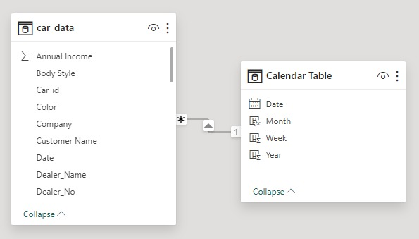
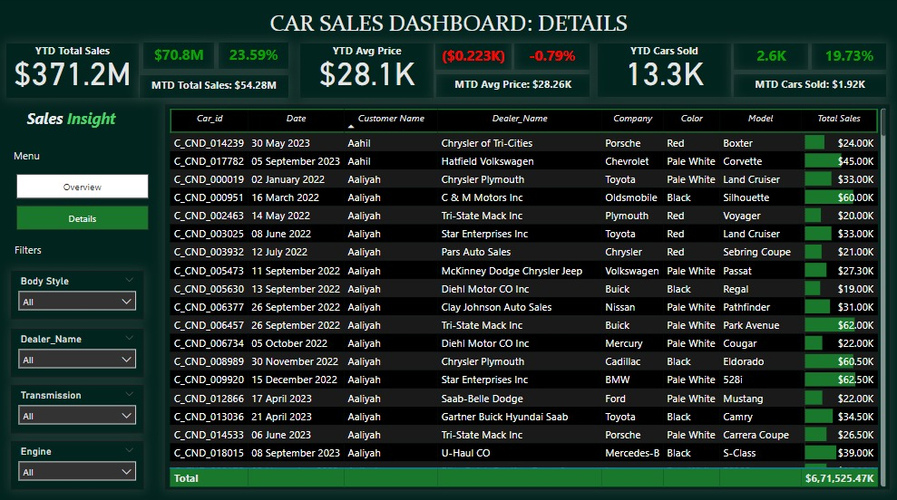

Project-7
Car Sales Analysis || Microsoft Power Bi
Welcome to my MS Power Bi project - the "Car Sales Analysis"! In this endeavor, Developed a dynamic Power BI dashboard for a dealership, offering real-time insights into sales KPIs like trends, average prices, and cars sold metrics. Enables data-driven decisions in the automotive industry.
Overview:
Developed a dynamic and interactive Car Sales Dashboard using Power BI for a leading car dealership.
Aimed to provide real-time insights into key performance indicators (KPIs), enabling data-driven decisions and performance monitoring.
Steps Involved:
Data Cleaning and Transformation:
Data Modelling:
Data Preparation:
Data Visualization:
- YTD Total Sales
- MTD Total Sales
- YOY Growth in Total Sales
- Difference between YTD Sales and Previous Year-to-Date Sales
- YTD Average Price
- MTD Average Price
- YOY Growth in Average Price
- Difference between YTD Average and Previous YTD Average Price
- YTD Cars Sold
- MTD Cars Sold
- YOY Growth in Cars Sold
- Difference between YTD Cars Sold and Previous YTD Cars Sold
- YTD Sales Weekly Trend (Line Chart)
- YTD Total Sales by Body Style (Pie Chart)
- YTD Total Sales by Color (Clustered Column Chart)
- YTD Cars Sold by Dealer Region (Map Chart)
- Company-Wise Sales Trend in Grid Form (Tabular Grid)
- Details Grid Showing All Car Sales Information (Detailed Grid)
Analysis Insights:
- 23.59% YTD sales surge compared to 2022, generating $371.2M in revenue in 2023.
- Average car prices decreased by 0.79% in 2023, requiring attention for potential revenue increase.
- Austin region led in sales, followed by Janesville.
- Highest sales occurred in the 36th week (September), followed by the 47th week.
- Car sales increased by 19.73% in 2023 compared to 2022.
- Pale White was the top-selling color, and SUVs and Hatchbacks were the leading body styles.
- Chevrolet, Ford, and Dodge were the top 3 selling companies, contributing nearly 18% of total sales.
- Auto transmission outsold manual transmission.
- Double overhead camshaft engine cars surpassed overhead camshaft engine cars in sales.
Attention Required:
- Address the 0.79% decrease in average car prices in 2023 to potentially boost total revenue.
- Focus on improving sales in Middletown and Pasco regions, which lag behind top-performing regions.
- Analyze and enhance sales strategies during 1Qtr and 2Qtr to match performance in other quarters.
- Implement targeted measures to improve sales for Jaguar and Hyundai, which accounted for less than 1% of total sales.
Conclusion:
Rectified errors, including spelling mistakes in the dataset.
Utilized Power BI's 'transform' feature for data type correction.
Created a Calendar table for YTD, MTD, and YOY analysis.
Extracted valuable information from Date to derive Week, Month, and Year using DAX.
Established a one-to-many relationship between the Calendar table and Car's data.
Introduced DAX measures for KPI calculations.
Implemented various KPIs, highlighting profit and loss with distinct colors.
A. Problem Statement 1: KPI’s Requirement
Sales Overview:
Average Price Analysis:
Cars Sold Metrics:

This Car Sales Analytics Dashboard offers a comprehensive view of the dealership's performance in 2023, providing valuable insights into sales trends, KPIs, and areas for improvement. With a clear visualization of key metrics and actionable analysis, this dashboard serves as a powerful tool for making informed decisions and driving growth in the competitive automotive market.